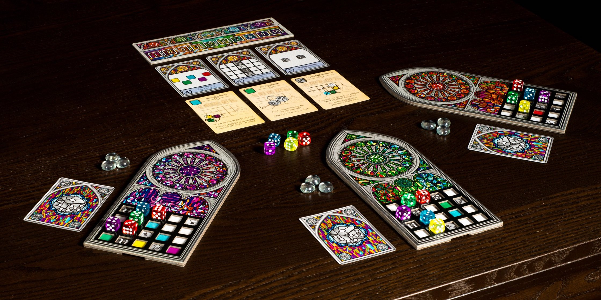
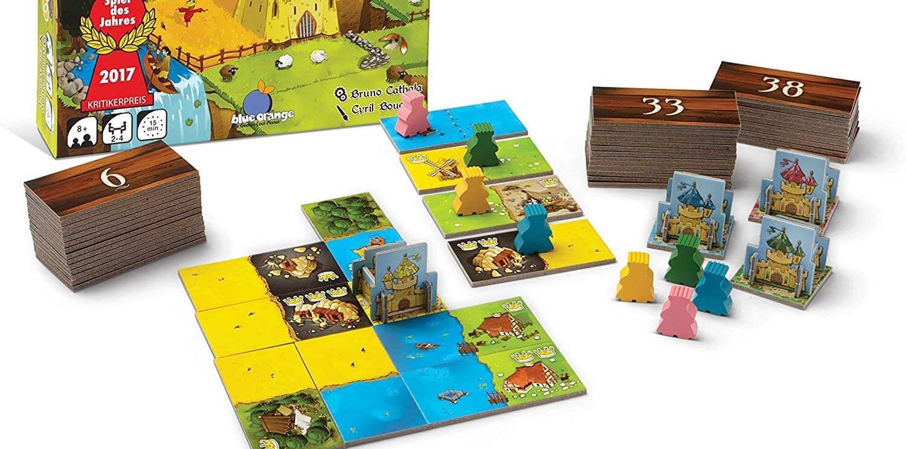
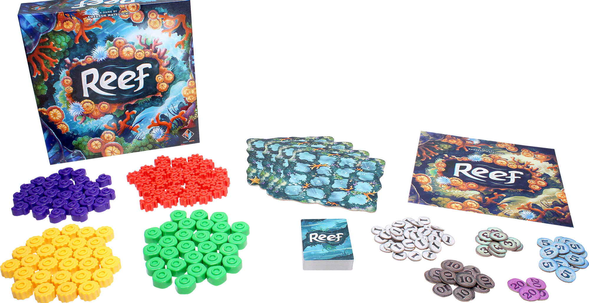

If you like Azul, try these 3 games


Azul has made a huge splash since its release in 2017, thanks to its clever design and the fact that anyone can learn the game quickly. If you enjoy Azul, you might like the competition of drafting tiles or the puzzle of placing your tiles to earn the highest score. Maybe you just love the beautiful theme and smooth tiles. Or maybe you appreciate that it truly is easy to learn and difficult to master.
These 3 games share many of Azul's best features along with their own unique twists & fun themes.
Sagrada

Sagrada is a delightful sister game to Azul - instead of laying tiles, you're placing panes into a beautiful stained glass window. Like Azul, you spend each turn drafting a piece to add to your board. But in Sagrada, you take colored dice.
When you place dice, you must meet placement requirements based on their color and number to maximize your score at the end of the game. You have to place your dice strategically like in Azul, but you never know what numbers will be rolled on which color dice, so flexibility is key. In case you ever get stuck with a bad die, Sagrada introduces special abilities that you can use to get yourself out of a pinch.
Overall, Sagrada is slightly more complex than Azul, but it's just as easy to learn. The game also includes window mats of increasing difficulties, so you can test your strategic limits with each play.
Buy Sagrada on Amazon
Kingdomino
Kingdomino is another drafting game: you take turns taking (you guessed it!) domino-like tiles. Instead of having pips, these dominos depict different terrains, which you use to build your own brightly-colored kingdom.
In this game, you don't have to match any specific pattern like the board in Azul - instead, you must place tiles around your starting castle to strategically to build out each terrain. This means that you'll have to plan your terrains out over several turns and hope that you're able to secure the right tiles to make your plans work just right. Player interaction is even more important in Kingdomino than Azul - if you keep an eye on your opponents' kingdoms, you might be able to snag a few tiles that would be really valuable for them.
Just like Azul, you can learn this game in less than 10 minutes, but the strategy isn't easy to master. Kingdomino is quick to setup, has quick turns, and it lets you build a lovely kingdom by the end of the game, even if you don't win.
Buy Kingdomino on Amazon
Reef
Reef is another brightly-colored game that awards points for arranging pieces on your board strategically, but it uses a few interesting mechanics that make you think in new ways.
Unlike Azul, you can choose from 2 different actions each turn. You may EITHER (1) choose a card to add to your hand OR (2) play a card from your hand. The cards provide new coral pieces and then trigger scoring for certain patterns on your board. This adds a new level of strategy because you must balance your need to take good cards with building up your reef to score points.
Instead playing tiles on one level, in Reef, you can stack coral pieces on top of each other to dramatically change the patterns and score more points. Since you score points throughout the game (not just at the end), you have to think several turns ahead to line up scoring combinations.
Reef will stretch your mind even further than Azul, so give it a shot if you want to test your limits. Regardless of who wins, you'll love the towers of colorful coral in your reef at the end of each play!
Buy Reef on Amazon
Want more recommendations or have feedback for us? Send an email to support@spiralburst.com and we'll get back to you!